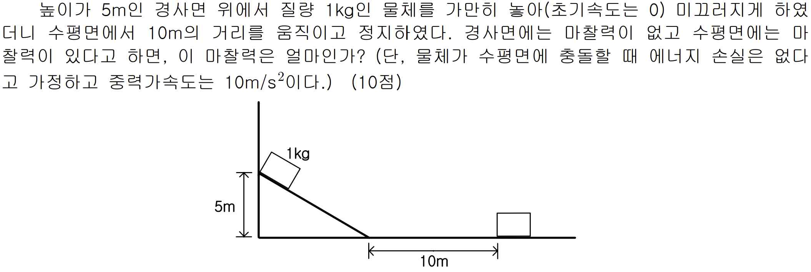

문제 8
높이가 5m인 경사면 위에서 질량 1kg인 물체를 가만히 놓아(초기속도는 0) 미끄러지게 하였더니 수평면에서 10m의 거리를 움직이고 정지하였다. 경사면에는 마찰력이 없고 수평면에는 마찰력이 있다고 하면, 이 마찰력은 얼마인가? (단, 물체가 수평면에 충돌할 때 에너지 손실은 없다고 가정하고 중력가속도는 \(10 \, \text{m/s}^2\)이다.) (10점)

높이가 5m인 경사면 위에서 질량 1kg인 물체를 가만히 놓아(초기속도는 0) 미끄러지게 하였더니 수평면에서 10m의 거리를 움직이고 정지하였다. 경사면에는 마찰력이 없고 수평면에는 마찰력이 있다고 하면, 이 마찰력은 얼마인가? (단, 물체가 수평면에 충돌할 때 에너지 손실은 없다고 가정하고 중력가속도는 \(10 \, \text{m/s}^2\)이다.) (10점)